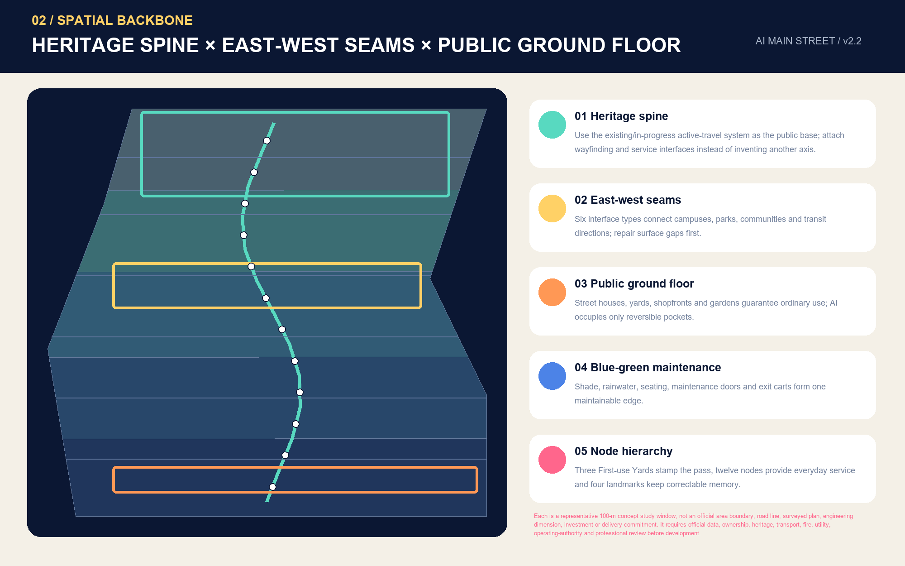
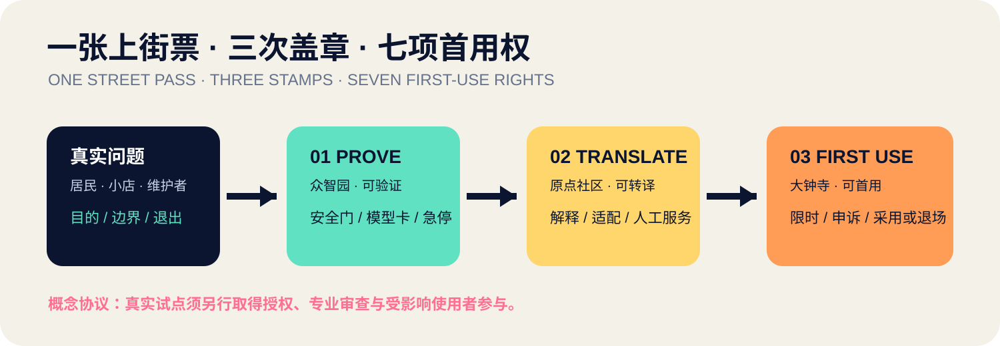
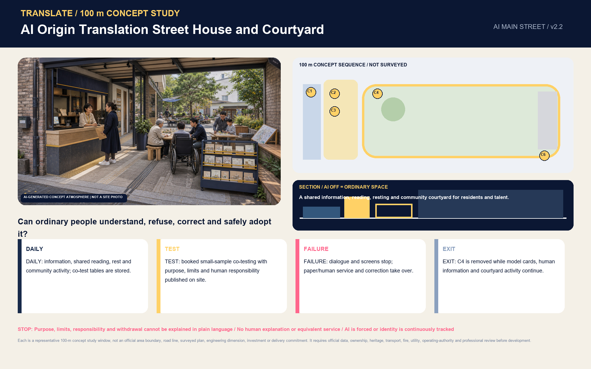
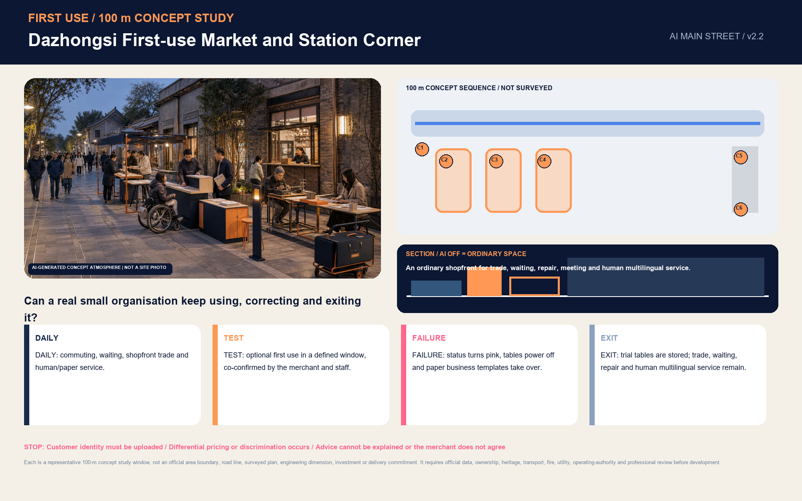
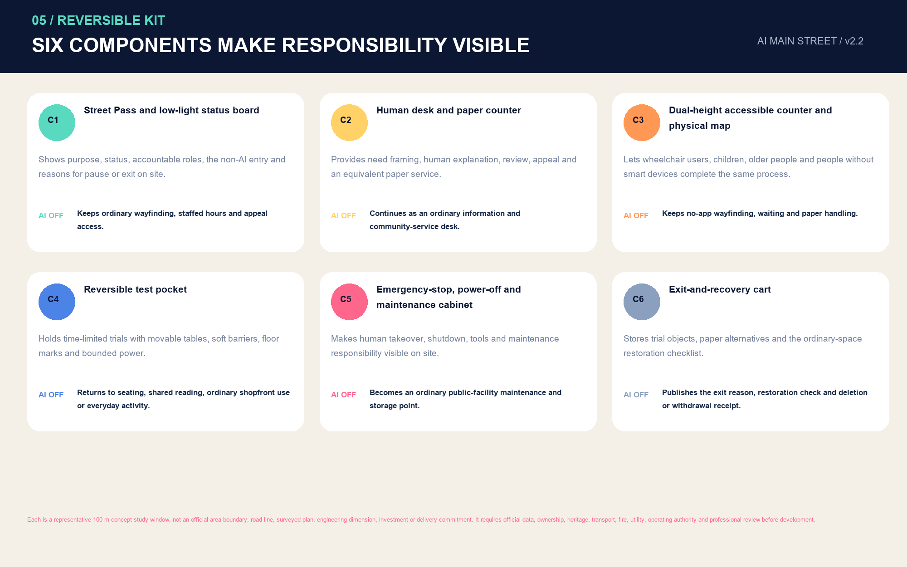
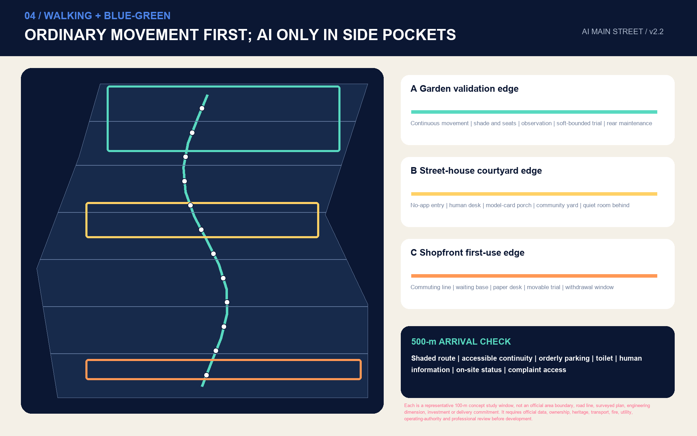

Jing-Zhang AI MAIN STREET: A Centennial Innovation Front Door from Laboratory to Street Corner
Using the Jing-Zhang Railway Heritage Park as a public-stoppable first-use test line, one Street Pass, three spatial stamps, three representative 100-metre concept study windows and seven first-use rights close the final 500 metres between AI results in laboratories and ordinary streets.
Jing-Zhang AI MAIN STREET: A Centennial Innovation Front Door from Laboratory to Street Corner
In one sentence: enable Haidian's AI to be seen not only in laboratories, launches and campuses, but to be safely first used at ordinary street corners through a “Street Pass”; understood by ordinary people; taken over by maintainers; and promptly withdrawn when it fails. Rather than another technology-landscape axis, the spatial structure is “one Main Street line, three First-use Yards, a two-wing service network, and twelve Street Nodes”: Zhongzhiyuan applies the “verification” stamp, the Beijing AI Origin Community the “translation” stamp, and Dazhongsi the “time-limited first-use” stamp, while the Jing-Zhang Railway Heritage Park joins them into a continuous public front door. Each Street Pass records seven first-use rights, responsible roles, minimum data, human takeover, appeal, and the conditions for restoring ordinary service.
All proposed spatial interventions are open co-creation proposals, conceptual recommendations, or reference material for further study by professional teams. They do not replace formal planning and do not constitute government approval, engineering feasibility, investment, business-attraction, or implementation commitments.
One Pass in One Day: From an Ordinary Arrival to a Public Decision
“Lin Lan” is a synthetic, non-identifying persona: a Dazhongsi small-shop owner and caregiver. She wants to improve multilingual product descriptions and accessible arrival information without uploading customer identities. At 07:30, she first uses no-app wayfinding, a physical map, shaded seating and human help in the Jing-Zhang Railway Heritage Park. At 09:30, the problem reaches Zhongzhiyuan; it can enter PROVE only when the test extent, physical emergency stop, near-miss record and removal line are clear. At 12:30 in the AI Origin Community, it gains TRANSLATE only when she can restate the purpose, limits, human responsibility and withdrawal method in plain language. At 16:30 in Dazhongsi, a time-limited, de-identified, human-present trial still needs merchant final confirmation, a deletion receipt and a non-AI business template before it completes FIRST USE. At 20:00, success, pause and failure return to the public ledger on the same result card. 空间数据 空间数据
Lin Lan is not a passive “user,” but a reviewer who, with affected users, on-site maintainers, specialist reviewers and an authorisable operator, decides whether to expand, pause or exit. Any one of them may call for a pause; a proposer or operator cannot decide replication alone. Once tables, barriers and equipment are removed, the garden, courtyard, shopfront trade, human service and ordinary passage must still work. 空间数据 指标

This person, timing and spatial sequence are conceptual situations for professional discussion. They do not represent a real person, existing operation, authorised schedule or performance. “The final 500 metres” means the last phase in which ordinary people, small organisations and maintainers come to understand and trust a research result; it is not a precise service radius.
Agent Review at a Glance
The proposal's decisive distinction is not another drawn “AI axis,” but a comprehensible, optional, appealable and withdrawable Street Pass that every research result must obtain before entering a real street. It places industrial translation and public rights in one spatial protocol: Zhongzhiyuan proves whether it can work safely; the AI Origin Community translates whether ordinary people and small organisations can understand and adopt it; Dazhongsi verifies whether actual first use can persist, be corrected and exit. The Jing-Zhang Railway Heritage Park provides the continuous, everyday public front door that people can observe.
| Review question | Jing-Zhang AI MAIN STREET response | Verifiable evidence |
|---|---|---|
| What is original? | One Street Pass, three stamps—PROVE / TRANSLATE / FIRST USE—and seven first-use rights | visual/assets/street-pass.schema.json; visual/assets/first-use-rights.json |
| Where is the urban design? | One heritage public spine, six types of east–west stitching and three distinct representative 100-metre concept study windows; each shows spatial sequence, section, four states and AI OFF | Three place figures, the C1–C6 component ledger, five core figures and nine GeoJSON types |
| How does industry translate? | A problem library–verification yard–translation desk–first-use window–responsibility ledger connects full-stack verification, research translation, agents/content consumption/intelligent terminals and the two service wings | Three-Zones-and-Two-Wings interfaces, 12 scenario cards and 3 pilot sheets |
| What is delivered first? | Eight SP action packages organised as 0–6 month reversible prototypes, 6–18 month evidence-led replication and 18–36 month network review; timing is a conceptual maturity sequence only | Delivery-gates figure, action-package table and visual/assets/pilot-matrix.json |
| How is the public interest protected? | AI is always an optional layer; equivalent no-app, non-AI, paper or human service remains; named people hold review, emergency-stop and restoration duties | Seven first-use rights, stop conditions and responsibility roles |
| What remains unknown? | Official polygons, road boundaries, ownership, regulatory controls, utilities, building-by-building conditions and authorisations have not been provided; related values remain unknown, and the full chain is recalculated when official data arrive | Assumptions, constraints, metrics and the three matrices |
The official introduction states that Agents participate in preliminary planning, task organisation and project review, with proposals and contributions made public on GitHub. This overview therefore serves both human experts and review Agents by quickly locating originality, spatial design, deliverability and evidence boundaries. 来源
Design Basis and Source List
The proposal makes “what can be established and what must remain unknown” part of its design. The official announcement and brief/public-brief.md provide the project name, three-tier scope, approximate areas, three key areas and design tasks, and therefore form the basis for this response. 来源 标准
The agent taskbook provides three orientations, five functions, Three Zones and Two Wings, six required tasks and public-compliance boundaries. 来源 标准 data/source_registry.json distinguishes formal-ready, background-only and provisional-only material; the processed fact pack is navigation only. 来源 来源
The repository currently contains no formally verifiable, coordinate-based overall boundary or polygons for the three key areas. 来源 来源 This package therefore inherits maintainer-generated provisional geometry, explicitly marked official_boundary=false and geometry_role=provisional_constraint. 空间数据 空间数据
The provisional geometry is solely for generation, graphic expression, discussion and intake self-checking—not an Official Planning Boundary, precise area, ownership, Regulatory Detailed Planning, or approval judgement. 深度 深度
Professional references include the principles for public space, historic culture, urban character, traffic organisation and key-area design in the Urban Design Management Measures, and the statutory status of land use, intensity, facilities and the “four lines” in the regulatory detailed-planning rules. 标准 标准 Land-use codes follow the repository subset of the Ministry of Natural Resources classification. 标准 The architectural design-document depth standard is recorded only as a missing-data item because no official document is provided; it is not an authoritative basis. 标准
External cases are used only to compare mechanisms, never for spatial controls in this project. The six cases form a “mechanisms, not images” comparison 指标:
| Case | Transferable mechanism | Jing-Zhang translation | Not copied |
|---|---|---|---|
| AI Singapore | Research, talent, innovation and open toolchain | Zhongzhiyuan verification gateway and open problem library | Brand, institutional lists and funding figures 来源 |
| Mila | Open science, talent and industry partners | Origin Community co-learning room and model-card reading | Organisational structure and spatial scale 来源 |
| Vector Institute | Bridge from research to adoption | Three-stamp adoption chain | Partner lists and industrial performance 来源 |
| FCAI | Real problems, ethics and intelligibility | Seven first-use rights and affected-user review | Extrapolation of research findings 来源 |
| STATION F | Shared services, startup programmes and public interface | Dazhongsi small-shop first-use desk | Corporate brands and investment-attraction commitments 来源 |
| Helsinki AI Register | Public system purpose, responsibility information and public feedback | Street Pass status board, responsible person and feedback entry | Existing register contents and governance authority 来源 |
The proposal copies neither brands, imagery, company lists, investment figures nor spatial scales; it extracts only the organisational method of “research–verification–translation–first use–feedback–exit.”

Three-Tier Scope Framework
The Coordinated Research Area, approximately 43.6 km², supports industrial and regional coordination research; the Overall Design Area, approximately 11.4 km², supports urban renewal and overall urban design; and the three announced Key-Area Detailed Design Areas total approximately 368.4 ha, supporting deeper scenario, spatial and operational design. These are not three unrelated plans but one “Main Street chain”: the coordinated tier determines who supplies research, computing capacity, funding, talent and industry problems; the overall tier connects public interfaces, walking and cycling, the green spine and daily-life services; and the key-area tier makes verification, translation and first use into operable nodes. 深度 深度
Under EPSG:4548, the provisional polygon recalculates the Overall Design Area at approximately 11.413 km²; 指标 this establishes only internal consistency of submitted geometry and does not replace the announced approximation or a formal boundary. Provisional recalculations for the three key areas are 指标, 指标 and 指标, with 指标 areas. Drawings reduce provisional boundaries to pale grey dashed lines while showing the design spine, scenario nodes and public space in high contrast, enabling legible design without misrepresenting coarse rectangles as statutory controls.
Four requirements flow from the coordinated tier to the key areas: put problems onto the street, so industries and the public jointly define problems; put models through the gate, so every scenario is tested under open rules, minimum data and human takeover; bring services to people, with non-AI alternatives retained; and return results to the repository, so successes and failures both become reviewable records. Once official polygons are available, the site boundary and key areas must be replaced together, and land use, buildings, roads, green space, public space, phases, metrics, five figures, web pages and both PDF sets regenerated—not merely a boundary line changed. 空间数据

Coordinated Research Area: Industry and Future-City Research
The industrial proposition of Jing-Zhang AI MAIN STREET is to close the final 500 metres of the AI ecosystem: how research enters real organisations; how real organisations raise verifiable questions; how ordinary people receive explanation and an exit right; and how maintainers know when systems fail. The six cases collectively show that neither a single landmark nor one enterprise creates an ecosystem; research, talent, adoption, public discussion, startup services, transparent registration and ongoing operations must be combined. Jing-Zhang therefore sets out five connected stages—problem library, verification yard, translation desk, first-use window and responsibility ledger—rather than a one-off launch. 深度
Real Baselines Are Not Backdrop, but the Design Starting Point
The proposal records officially published 2026 information as dated, scoped background baselines that change design actions. It neither turns administrative reporting into street-segment facts nor presents existing initiatives as proposed by this scheme:
| Published baseline | Direct spatial and operational decision | What it cannot establish |
|---|---|---|
| Universities, research platforms, talent and AI firms are highly concentrated within one kilometre of the AI Origin Community. Official reporting gives point-in-time figures of 37 universities, 10 new R&D institutions, 52 national key laboratories, 106 national-level research institutes, 12,300 AI scholars, and 325 AI firms among 439 enterprises. | Replace a generic “talent exhibition hall” with a one-kilometre translation circle: open results window–OPC/developer co-learning–first-use demand–capital/IP/internationalisation referral–community feedback. | It cannot prove that every institution will participate, serve as a current company list or parcel boundary, or predict performance. 来源 |
| Phase I of the Jing-Zhang Railway Heritage Park is already a frequently used public place. Official reporting records 2.4 km, 16.8 ha, more than 60 youth activities and more than 4.3 million visits in 2025, and names interfaces including the Railway Museum, 1909 Train Restaurant, mobile boxes and an AI training station. | The twelve nodes use “retain–upgrade–connect”: first connect existing services, activities and human operations, then consider new equipment. Pilot schedules avoid peak periods and retain ordinary park capacity. | It cannot establish real-time footfall, capacity at a specific location or authorisation for activities. 来源 |
| Dazhongsi has entered a comprehensive area urban-renewal project, whose published tasks include a project library, near/mid/long-term sequencing, balancing public-benefit and commercial space, and a coordinating implementation entity. | First-use packages prepare interface lists for four host types: existing buildings, traditional retail, former factories and public space. The relationship to the published entity is only “recommended coordination,” not self-assigned responsibility. | It cannot mean this scheme has been adopted, entered the project library or received funding sequencing. 来源 |
| Official Three Zones and Two Wings reporting identifies differentiated industrial directions for the three key areas and eastern and western wings. | Align the three stamps with real industrial roles, and join key areas and service wings through two flagship scenarios. | It cannot determine specific land use, investment-attraction targets or project siting. 来源 |
The Three Zones and Two Wings thus form an industrial translation chain: Zhongzhiyuan serves full-stack technology, standards, safety and integrated verification as PROVE; the AI Origin Community serves research results, talent entrepreneurship and the one-kilometre translation circle as TRANSLATE; Dazhongsi serves agents, content consumption and intelligent terminals as FIRST USE; the Zhongguancun Technology Services Wing supplies IP, capital, legal, productisation and international-service interfaces; and the Xiaoyue River Scenario Enablement Wing takes on real scenarios including embodied intelligence, AI + healthcare and AI + film. Two cross-area flagship passes are the Small-Shop First-use Street Pass and the Embodied-Intelligence Shared-Road Street Pass. AI-content first use between Beijing Film Academy and Dazhongsi is an S09 industry-extension direction only, and must first pass review of content rights, public impact and operational authorisation.
The smallest transferable unit is the “Jing-Zhang Street Pass.” It is neither an administrative permit nor a commercial access certificate, but an open-co-creation conceptual credential. The same scenario must leave 指标 spatial stamps and, in one record, declare spatial reference, seven first-use rights, data minimisation, named human roles, operating window, stop conditions, restoration of ordinary service and evidence links. Its machine schema is 空间数据 and its synthetic example is 空间数据; all examples are pending and authorized=false, and do not purport to be actual authorisations or pilot performance.
The three orientations become spatial actions: the Centennial Jing-Zhang cultural belt becomes a public timeline of visible evolution; the urban AI life-experience belt becomes everyday first use rather than spectacle; and the AI-integrated innovation belt becomes a chain from research through industry to street corner. The five functions are realised through the industrial translation chain above in stamp responsibilities, pilot sheets and spatial interfaces, rather than remaining a name-to-programme comparison.
The visual identity is an open direction independent of third-party marks, images or commercial fonts: two parallel lines represent railways and data; a bracket opening onto the street represents movement from a closed system to a public interface; and three nodes represent verification, translation and first use. The Chinese primary name is “Jing-Zhang Shangjie”; the English name is “AI MAIN STREET.” Secondary names are standardised as “First-use Yard,” “Street Node” and “Service Wing.” The original vector construction is at assets/figures/jingzhang-main-street-logo.svg; the three-stamp protocol is at assets/figures/street-pass-protocol.svg. Both are conceptual directions for further development by a professional visual team, not registered trademarks or official marks.

Regional coordination does not invent a company list; it defines open interfaces. Beiwey Community, Future Science City, Huairou Science City, the Economic-Technological Development Area, and Beijing–Tianjin–Hebei participants may enter through open problems, model cards, testing protocols, failure reviews and transformation applications. Each collaboration must state source, rights, data boundaries and exit conditions. Thus a “global ecosystem” is not a geographical directory but a collaboration protocol that any qualified participant can understand, reproduce and join.
Overall Design Area: Urban Renewal and Urban Design at Regulatory Detailed-Planning Depth
The overall structure is “one line, three yards, twelve nodes”: the north–south Main Street line follows the Jing-Zhang Railway Heritage Park with continuous walking, cycling, shade and public explanation interfaces, while the three First-use Yards sit in the three key areas. 空间数据 空间数据
Six east–west connectors reach universities, campuses, communities and rail-station directions; twelve Street Nodes break AI services into small-scale, maintainable interfaces. 深度 深度
The spatial backbone is more than a north–south line. The continuous public ground of the Jing-Zhang railway heritage provides visibility and arrival; east–west stitching brings real questions from universities, campuses, communities and rail directions to the spine; the public ground floor converts research interfaces into enterable gardens, street rooms, covered courtyards and shopfronts; and blue-green and maintenance interfaces make shade, rainwater, seating, inspection and exit work together. The three First-use Yards are not one module renamed: they are fixed as three spatial prototypes—the verification loop, translation cloister-courtyard and first-use market. 空间数据 深度
The land-use layer is not a determination of existing conditions or approved Regulatory Detailed Planning. It is a five-part functional gradient cut by the same provisional boundary: open research and verification; near-campus learning and translation; community service and shared-benefit interface; first-use commerce and urban presentation; and life support and talent friendliness. Shared cut lines ensure full coverage and no overlap, so it can be recalculated once the Official Planning Boundary is available. 空间数据 Its value is in explaining how far research is from the street, where services occur and how residents enter—not in declaring a land-use adjustment.
Urban renewal follows “interfaces first, buildings later”: first check ground-floor accessibility, walking continuity, night lighting, shaded rest, information signs, appeal channels and maintenance space; then decide retention, repair, adaptation or new construction through survey, ownership, structure and Regulatory Detailed Planning. Twelve conceptual building footprints express only the scale and distribution of street-corner hosts. 空间数据 指标 指标 They do not establish existing buildings, demolition, storeys or construction scale. 深度 深度 深度
Regulatory controls, road boundaries, heritage-protection extent, utility networks, fire protection, flood control and public-service baselines have not been provided. The proposal puts these gaps in the constraints layer and assumptions table rather than concealing them with concept drawings; FAR, total floor area, building height and road-area ratio remain unknown. Municipal and new infrastructure are limited to a functional list—shared cabinets, edge-side de-identification, power-off degradation, human watch, event logs and seasonal calibration—with capacities and engineering alignments pending specialist study. 深度
Key-Area Detailed Design
Zhongzhiyuan: the Verifiable First-use Yard
Zhongzhiyuan performs “model-gating.” Its conceptual space comprises an open verification court, industry-problem desk, safety-and-standards forum, low-speed-delivery verification loop and reversible demonstration surface. Testing must first define boundaries, observation indicators, human takeover, incident reporting and exit conditions. A garden-style innovation district is not ornamental planting: continuous tree shade, sittable steps, outdoor test power and quiet spaces support sustained research collaboration. Its provisional extent is 空间数据, and must not be read as an official district or project boundary.
The representative 100-metre concept sequence, from public to research side, comprises a continuous shaded and accessible everyday base; C1 status board and C2 safety-officer window; observation cloister and sittable edge; C4 soft-separated low-speed verification loop; C5 rear emergency-stop/inspection; and C6 removal storage and restoration surface. Pedestrians, wheelchair users and cyclists do not cross the verification loop; equipment runs only as a closed circuit within it. In a fault, equipment takes the shortest recovery line and ordinary passage outside remains continuous. With AI off, it remains a complete garden, observation cloister and safety consultation point. A boundary breach, takeover timeout, blocked accessible route, unreported collision/near miss or inability to remove and restore passage triggers immediate stop. 空间数据 空间数据

Beijing AI Origin Community: the Translatable First-use Yard
The Beijing AI Origin Community translates “paper language into city language.” Its conceptual space includes a research-result first-use window, developer co-learning room, model-card reading rack, talent daily-service desk, and co-testing periods for families and older adults. The priority is not another closed incubator but walkable ground-floor and courtyard contact among universities, research institutions, startups and residents. The one-kilometre translation circle feeds real demand to the open results window and sends first-use results back to research teams. Any connection involving a university or campus is conceptual and requires verification of ownership, fire safety, campus management and traffic conditions. 空间数据
The representative 100-metre concept sequence is organised as “street–cloister–courtyard–quiet room”: a street-facing no-app entrance and C1 status board; C2 human needs-breakdown window; C3 dual-height model-card wall and physical service map; co-testing cloister and C4 movable tables; community courtyard; a sensitive-information quiet room subject to authorisation; and a C6 exit returning to ordinary community service. Residents and talent can circulate without entering the quiet room; questions enter through the human window and results return through plain-language and paper cards. With AI off, consultation, shared reading, rest and the community courtyard continue to work. A result cannot receive the TRANSLATE stamp if purpose, limits, responsibility and withdrawal cannot be explained, human explanation is absent, AI use is compulsory, data are still processed after withdrawal, or the accessible main chain is blocked. 空间数据 空间数据

Dazhongsi: the Urban First-use Yard
Dazhongsi enables “the first safe AI adoption by small organisations.” Its four interface types serve small shops, cultural/content consumption, international business and community repair. Merchants may bring real but de-identified problems to the first-use desk, where a service team assists needs breakdown, model selection, risk assessment, trial and withdrawal. Existing-building ground floors, traditional commercial fronts, former factories and public spaces are the four priority host types. Whether and how they are used must be recommended for coordination with the published renewal coordinator and included in project-library, public-benefit/commercial-balance and near/mid/long-term review. The four quadrants around Dazhongsi station express only aims for walkability, orderly non-motorised parking, corner dwell time and continuous wayfinding; they make no conclusion on bridges, tunnels, roads or station-city construction. 空间数据
The representative 100-metre concept sequence is organised as “station direction–shopfront–market–backstage”: continuous walking and waiting base; C1 status board and C2 human desk; C3 paper needs template/non-AI business template; C4 rotating tables for small shops, multilingual content and repair; merchant confirmation and deletion/withdrawal window; C5 light-maintenance cabinet; and C6 removal cart. Commuting, shopping and the accessible main chain continue directly without crossing trial tables. Merchant problems return to operations after human breakdown, time-limited trial and final confirmation. With AI off, ordinary shopfront use, waiting, repair and human multilingual service continue. A requirement to upload customer identity, differential pricing or discrimination, an unexplainable recommendation, merchant disagreement, withdrawal without receipt, or trial obstruction of accessible passage means no FIRST USE stamp. 空间数据 来源

The three key areas share one Street Pass: the same scenario is verified in Zhongzhiyuan, translated in the Origin Community and first used for a limited period in Dazhongsi, then its problem, evidence, faults, appeals, human takeover, non-AI alternative and exit outcome enter a public ledger. Each follows the sequence “arrival–ordinary public use–status board–human desk–optional AI–restored ordinary use.” After pilot equipment is removed, walking, shade, seating, wayfinding and human service must still work. The detailed design reaches a depth at which problems, space, operations, risks and evidence can be further developed; it is not statutory planning or an approved Integrated Planning Implementation Plan. 深度
Six shared components join the three areas into one transferable system: C1 Street Pass/low-brightness status board; C2 human window/paper desk; C3 dual-height accessible counter/physical map; C4 reversible test pocket; C5 emergency-stop/power-off/maintenance cabinet; and C6 exit-and-restoration cart. The components are the same, but their combinations and protagonists differ: Zhongzhiyuan foregrounds the safety officer and verification loop; the Origin foregrounds human explanation and cloister-courtyard; and Dazhongsi foregrounds merchant decision and ordinary trade. Every component is a conceptual design object only, not evidence of secured equipment, a site or operating authorisation. 空间数据


AI Innovation Ecosystem, Talent Profiles and AI-Enabled Scenarios
Seven user profiles determine how Street Nodes work: researchers need real problems and compliant verification; entrepreneurial developers need low-cost first-use customers and failure feedback; small merchants need lightweight, explainable tools they can exit; residents need equivalent service without being forced to use AI; older adults and people with disabilities need accessibility, low cognitive burden and a human desk; front-line maintainers need fault isolation, spare parts and stop authority; urban managers and professionals need an evidence chain, audit and appeal review. Each profile records benefits, risks, non-AI alternatives and human responsibility.
All profiles share seven “first-use rights” 指标: the right to know purpose, capability limits, status and responsible person; to choose without coercion; to receive equivalent no-app, non-AI, paper or human service; to have an important result reviewed by a named person; to correct errors and withdraw or delete data according to rules; to appeal in person, by phone or offline; and to restore ordinary public use after a pilot ends. The complete conceptual list is 空间数据. It is not a substitute summary of current law; real pilots still require joint development by legal, privacy, safety, accessibility, operational and affected-user participants.
The twelve scenario cards are below. Node locations correspond to 空间数据 through SCN-12, 指标:
| ID | Scenario and space | Users | Data minimisation and human review | Status |
|---|---|---|---|---|
| S01 | Open model-translation desk / Origin Community | Researchers, residents | Read-only public model cards; on-site explainer review | Public-service concept |
| S02 | Research-result first-use window / Origin Community | Developers, small shops | De-identified samples; merchant signs trial and withdrawal | Industry testing and validation |
| S03 | Small-shop smart operations desk / Dazhongsi | Small merchants | No customer identity upload; operator confirms recommendations | Industry testing and validation |
| S04 | Embodied-intelligence shared-road verification loop / Zhongzhiyuan–Xiaoyue River Wing interface | Developers, pedestrians, cyclists, delivery workers | No facial recognition; safety officer may emergency-stop; record conflicts and near misses | Industry testing and validation |
| S05 | Accessible-route collaboration station / whole line | People with disabilities, older adults | Voluntary feedback; accessibility expert and user review | Industry testing and validation |
| S06 | AI + health referral desk / Xiaoyue River Wing–community interface | Residents | No diagnosis or medical-record retention; human referral to formal services | Industry testing and validation |
| S07 | Night-return safety companionship point / active-travel node | Night-time users | No continuous identity tracking; human help callable | Public-service concept |
| S08 | Thermal-comfort co-care station / green spine | Outdoor workers, children | Environmental data only; landscape staff calibrate | Public-service concept |
| S09 | AI-content and multilingual first-use desk / Beijing Film Academy–Dazhongsi interface | Creators, international talent, public | Rights-cleared content only; local temporary processing; curatorial and human-translation fallback | Industry testing and validation |
| S10 | Smart repair desk for old items / community | Residents, repair workers | No retention of personal device content; technician decides | Community concept |
| S11 | Data-consent and appeal desk / three yards | Everyone | Check purpose, withdraw consent, make human appeal | Governance infrastructure |
| S12 | Centennial Jing-Zhang story station / heritage park | Visitors, students | Rights-cleared historical material only; curator review | Cultural concept |
The six testing-and-validation scenarios share one gate: before testing, disclose objective, scope, responsible person, non-AI option and stop thresholds; during testing, record false positives, false negatives, takeovers and near misses; after testing, affected users and professionals evaluate together, and a scenario exits if public value or operational capacity is not met. Scenarios do not ingest maps with unverified provenance, enterprise data without explicit authorization, or personally identifiable information; they lock in no vendor and do not represent prototypes as ready for full deployment.
The first round does not deploy all twelve scenarios at once. It selects three minimum pilot sheets—one public and two industrial 指标. The public Accessible Together Street Pass begins at the Origin Community human desk, follows the Heritage Park active-travel spine to the Dazhongsi service desk, first ensuring physical maps, shaded rest, human assistance and a no-app route; users then voluntarily activate AI route advice. It stops immediately if the accessible main chain is blocked, human help is unavailable, identity tracking is continuous, or ordinary access cannot be restored. The industrial Small-Shop First-use Street Pass moves the same de-identified business problem through Zhongzhiyuan verification, Origin Community translation and a time-limited Dazhongsi trial; it requires human needs breakdown, paper templates, no customer-identity upload, merchant final confirmation and a withdrawable trial.
The third, Embodied-Intelligence Shared-Road Street Pass, proceeds from a closed verification yard to a controllable Zhongzhiyuan loop and a candidate Xiaoyue River Wing public interface. It observes only yielding, emergency-stop, takeover and near misses between low-speed equipment, pedestrians, cyclists and delivery workers; ordinary passage always has priority. It stops immediately if the geo-fence is exceeded, human takeover times out, an accessible route is blocked, a collision/near miss goes unreported, or equipment cannot be removed to restore passage. The ordinary-service baseline, operational roles, evidence targets and stop conditions of all three sheets are at 空间数据, PILOT-INDUSTRY-01 and PILOT-EMBODIED-01. Ninety days is only a conceptual test window for discussion—not an approved timetable, budget, procurement or performance commitment.
Land Use, Building Scale and Demolish–Renovate–Retain Strategy
Five conceptual functional bands cover the submitted boundary in full, with areas recalculated in EPSG:4548. Their purpose is to arrange “knowledge production–result translation–public service–first-use commerce–talent life” in a walkably legible gradient, not to prescribe statutory land-use change. 空间数据 深度 Green space, public space and building hosts are overlapping systems; repeated colour fills do not substitute for actual parcels and control lines.
The building strategy uses four levels of review rather than a specific demolish–renovate–retain determination: confirm history, structure, ownership and safety; assess ground-floor publicness and accessibility; assess low-carbon repair and reversible adaptation; only then consider additions. Of the current 12 conceptual footprints, 8 indicate intent to adapt existing interfaces and 4 reversible lightweight new-build intent; all are marked “subject to existing-conditions verification.” Building height, storeys, total floor area, FAR and actual density have no official basis and must remain unknown.
Urban-character control does not prescribe numerical height. It proposes refinable interface rules: keep continuous public ground floors and visible maintenance space along the Heritage Park; reserve rain shelter, dwell space and accessible turning at important corners; organise roof equipment to be maintainable, screened and removable; prioritise pedestrian recognition and low glare at night; and make digital media silent, low-brightness and switchable by default. Every building renewal must first pass review of heritage protection, green lines, fire safety, structure, traffic, ownership and public impact.
Conceptual building footprints total 指标 and represent 指标 of the provisional overall area. These metrics check only internal layer consistency; they are not planned building coverage, development intensity or project capacity. Actual demolish–renovate–retain classification must be rebuilt once official base mapping and building-by-building surveys are complete. 深度 深度 深度
Transport, Rail, Municipal Systems and Public Facilities
The transport strategy is oriented to “arriving at Street Nodes”: one continuous north–south walking-and-cycling spine joins the three key areas, with six east–west interfaces directed toward universities, campuses, communities and rail stations. Its submitted network length is 指标, only a conceptual centreline length, not a road boundary, cross-section or construction length. 空间数据 Missing-link work proceeds “at grade first, engineering later”: first wayfinding, crossing timing, intersection sightlines, non-motorised parking and accessible continuity; bridges, tunnels or station-city works only if necessary and then through transport and engineering studies.
Transit-station integration uses a “last-500-metres service checklist”: upon exit, users should find a shaded route, accessible route, non-motorised parking, public toilet, human information, scenario status and complaint entry. Dazhongsi’s four quadrants, Wudaokou and Qinghuadongluxikou show public-arrival relationships only, not conclusions on roads, bridges, tunnels, relocated entrances or underground space. Parking prioritises management of existing supply and short-duration loading; robots and low-speed delivery may enter only defined time windows and test boundaries.
Municipal and new infrastructure are designed to degrade safely: a Street Node retains human service when offline; sensors collect only data required for the task; edge processing comes first; computing and energy equipment have shut-down, inspection and replacement access; abnormal status is visible on site; and a named position takes over incidents. Public services never make AI the sole gateway: older adults, people with disabilities, people without smart devices and temporary visitors can complete matters through equivalent human processes. 深度 深度

Blue-Green Space, Public Space and Urban Character
The Jing-Zhang Railway Heritage Park is defined as a “legible innovation front door”: railway history is not decorative background but explains how independent innovation passes through testing, failure, maintenance and public use. The green spine is derived from a conceptual 78-metre buffer around the main line, 空间数据 指标 指标; the public first-use interface derives from buffers around the line and twelve nodes, 空间数据 指标 指标. Both express continuity goals only and require refinement when green-line, water, tree, heritage and ownership information is supplied. 深度
The park is not a blank axis awaiting infill. For the Railway Museum, 1909 Train Restaurant, mobile boxes, AI training station and existing youth activities named in official reporting, the sequence is “retain everyday operation–complete accessibility/wayfinding/human service–connect Street Pass status–upgrade or exit according to results.” No new node may replace an existing operator, displace peak park capacity or turn cultural facilities into technology advertising. Five Phase-II cluster types may be candidate interfaces for seasonal operation, but precise locations, opening times and construction status require separate verification. 来源
The public-space component library includes replaceable information panels, model-card racks, human-takeover buttons, low-brightness status lights, dual-height accessible counters, movable shade, seasonal seating, equipment access doors, non-AI service guidance, and dual QR-code/telephone appeal channels. Each component must state who maintains it, inspection interval, failure degradation and exit point. Digital screens are not default components; they may be installed only when content rights, energy use, glare, maintenance and an equivalent non-device alternative are resolved.
The Jing-Zhang-specific material language does not rely on faux heritage or a “technology light show.” Twin inlaid lines only signal the continuity of railway and data; dark repairable frames carry status, version and responsibility; replaceable enamel/metal plates borrow the legibility of timetable signs; railway-sleeper scale is translated only as a modular language for benches and tree-pit edges, without appropriating or inventing remains; low-brightness amber light indicates pause and human takeover; and demountable canopies, tables and dual-height counters must be storable, repairable and removable. Historical imagery and archival material still require rights clearance and professional curatorship; conceptual generated images cannot replace historical evidence. 空间数据 来源
Four “AI pilgrimage” nodes are knowledge-and-responsibility landmarks, not exaggerated objects: Zhongzhiyuan’s “Open Verification Court” shows test protocols and failure reviews; the Origin Community’s “Open-Source Contribution Gallery” records rights-cleared sources for papers, code, data and community contributions; Dazhongsi’s “First User Desk” shows safe small-organisation adoption; and the Heritage Park’s “Centennial Innovation Milestones” organises a narrative sequence, subject to professional verification, along the directions of Qinghuayuan Station, the Railway Museum/1909 public-culture interface, Sidaokou railway remains and Dazhongsi. Recognition displays must state PR/commit, contribution type, evidence, team, licence, version and a correction entry, avoiding personality cults, corporate advertising and permanent error.
The urban character follows three threads: plain engineering, open academy and warm street. Materials are durable and repairable; information is clear rather than showy; public ground floors welcome different people. Wayfinding and the overall logo have distinct roles: the logo identifies “one belt”; wayfinding addresses arrival, status, responsibility and exit. Historical narrative uses rights-cleared public historical material reviewed by curatorial professionals; generated imagery does not substitute for history.
Renewal Project List, Implementation Policies and Phasing
Ten conceptual renewal projects create a package of “small spatial inputs, institutions in place first”: 1 Main Street continuity audit; 2 Street Pass protocol and public status board; 3 Zhongzhiyuan Open Verification Court; 4 Origin Community result-translation window; 5 Dazhongsi small-shop first-use desk; 6 unified service components for twelve nodes; 7 Accessible Journey minimum trial; 8 Small-Business First-use minimum trial; 9 Embodied-AI Shared-path minimum trial; and 10 a correctable contribution milestone with a public ledger for operations, appeals and exit. 指标 Each may enter professional development only after verification of existing conditions, ownership, heritage protection, traffic, utilities, operational authorisation and public impact. 深度
Four Data Gates: Expand Pilots Only When Data Arrive
| Data gate | Minimum evidence required | What it can decide | Conservative action if unavailable |
|---|---|---|---|
| G1 Origin one-kilometre translation circle | Publicly shareable institution/service directory, ground-floor access, walking and accessible continuity, and source of real demand | Where to locate the translation window and co-learning periods, and which role accepts requests | Provide online problem registration and a single human consultation point only; do not claim a spatial network |
| G2 Heritage Park public capacity | Time-based footfall, activity calendar, operation of existing facilities, and gaps in toilets/shade/seating/accessibility | Node connection order, activity windows and maximum equipment footprint | Upgrade wayfinding and human service only; occupy no passage and install no continuous equipment |
| G3 Dazhongsi existing renewal | Building/shop-by-building conditions, ownership and fire safety, ground-floor business needs, public-benefit/commercial balance and project-library interface | Which hosts can adapt a first-use desk, who can be authorised to operate it and when to exit | Use a movable paper-service desk; make no demolish–renovate–retain, investment-attraction or investment judgement |
| G4 Embodied equipment shared road | Pedestrian/cycling/delivery flows, conflicts and near misses, weather/activity conditions, geo-fence and takeover logs | Whether to move from a closed yard into a controlled loop, and whether time or space may expand | Stay in a closed or physically separated setting; pause and review after any collision or unreported incident |
Every data gate records a version, time window, spatial extent, source, licence, missing items and reviewing role. Administrative statistics identify only what should be verified first; they do not replace field investigation. If any gate input changes materially, the related Street Pass automatically returns to pending and must earn all three stamps again before expansion.
Eight SP First-use Action Packages
The ten renewal projects are organised as eight deliverable action packages. “Authorisable lead” defines a responsibility type only; it does not presume institutional agreement, funding or approval.
| Action package | Initial deliverable | Authorisable lead / required co-review | Do-not-start and stop condition | Acceptance evidence |
|---|---|---|---|---|
| SP-01 Street Pass and status board | Schema, paper pass, public status fields, appeal/restoration templates | Public operations lead / legal, privacy, accessibility, affected users | Do not go live without a human desk, non-AI route or visible responsible person | Three-stamp record, appeal receipt, stop drill |
| SP-02 Zhongzhiyuan verification court | Reversible verification loop, safety-officer window, emergency-stop/near-miss record | Verification-yard operator / safety, transport, maintenance roles | Stop for no geo-fence, no emergency stop, or unreported collision/near miss | Takeover latency, near-miss closure, removal-and-restoration |
| SP-03 Origin translation window | Model-card rack, human explanation desk, co-testing booking and result card | Translation-window operator / researchers, residents, small organisations | Do not stamp if it cannot be explained plainly or data cannot be withdrawn | Comprehension review, human correction, demand return flow |
| SP-04 Dazhongsi first-use desk | Paper demand template, time-limited trial table, merchant-withdrawal window | Area operator / merchants, renewal/fire/data specialists | Stop for no final merchant confirmation or no ordinary template | Completion rate, corrections, deletion/withdrawal receipt |
| SP-05 Accessible Together chain | Continuous-route audit, physical map, human assistance, rest points | Public-space operator / users, accessibility specialists | Stop for a blocked main chain, no help, or default tracking | Closed gaps, response time, usable non-AI route |
| SP-06 Twelve-node service components | Human desk, dual-height counter, low-brightness status, maintenance and exit guidance | Node operator / landscape, municipal, maintenance and public reviewers | Remove if passage is occupied, a screen cannot be switched off, or maintenance has no assigned role | Inspection, failure degradation, ordinary use restored |
| SP-07 Correctable contribution milestones | Versioned-record template for contribution wall, open-source-result nodes and global-developer wall | Public curatorial operator / rights holders, archives, public review | Do not display material without source/licence/evidence, or present a submission as selection | PR/commit, contribution type, licence, version, correction record |
| SP-08 Four-season operations and public review | Annual package for problem calls, co-testing, open-source first use and maintainer review | Annual operator / communities, universities, enterprises, international participants | Do not expand activities without archive, failure review and exit route | Public problems, result cards, failure library, next-year revision |
The eight action packages are further organised into three conceptual maturity windows. In months 0–6, make only paper passes, human desks, physical route audits, movable service desks, and power-off/removal drills. In months 6–18, replicate controllable loops, bookable co-testing and time-limited first use only after users, maintainers and specialist reviewers all pass review. Only in months 18–36 should the twelve-node network, version ledger and annual maintainer review be discussed. These periods are not approved construction schedules: every new site must still obtain data, ownership confirmation, specialist review and operating authorisation, and one pilot cannot substitute for a whole-line permit. 空间数据 深度

SP-07 connects with the official intent for an Agent contribution wall, AI milestones, open-source-result nodes and a global developer wall, but redesigns “permanent honour” as a correctable open record. Every inscription or display links at least to a PR/commit, contribution type, evidence, licence, version, year and correction entry; non-selection, withdrawal or a changed rights status must remain updateable, so irreversible memorials do not become erroneous commitments. 来源
The phasing layer divides the provisional overall area into three parts, not to prescribe construction geographically from south to north but to represent operational maturity as reviewable thresholds. 空间数据 The near term first tests the three First-use Yards and four high-value scenario types, area 指标; the medium term extends Street Nodes and the two service wings after review passes, area 指标; only the long term forms an annual network of global problem calls, open protocols and activities, area 指标. Phasing is conceptual sequence, not an investment or start-of-work commitment. 深度
Annual operational recommendations are: spring “Global Real-Problem Call / 全球真实问题征集,” when residents, merchants, institutions and international communities submit problems; summer “Street Co-test / 街角共测季” for accessibility, thermal comfort, small shops and embodied equipment; autumn “Open-source First-use Week / 开源首发周” for model cards, failure reviews and public contributions; and winter “Maintainers’ Review / 维护者复盘” rewarding reliability, repair and responsible exit. The developer community operates through a problem library, testing protocol, mentor duty, maintenance credits and open archive; the enterprise conversion path is “problem registration–compliance assessment–small-sample verification–public review–time-limited first use–scale-up or exit.” Each season produces a result card ready for direct Chinese–English release, using one template for success, pause and failure.
Every pilot uses five responsibility roles: a public-task proposer defines the issue and public value; an authorisable operations lead is responsible for operation and restoration; specialist reviewers cover safety, privacy, accessibility and sector judgement; on-site maintainers hold emergency-stop, inspection and degradation authority; and affected-user representatives participate in close-out. A proposer may not approve a pilot alone, an operator may not assess expansion alone, and AI cannot replace any person who legally or contractually bears responsibility. Minimum evidence for advancing is not “a cool experience,” but complete three-stamp records, usable seven rights, equivalent non-AI service achievable on site, receipted appeals, and a stop drill that restores ordinary use.
Policy recommendations describe mechanisms only: a first-use voucher for small organisations requires separate funding and procurement analysis; public-scenario protocols require legal, privacy and sector coordination; open data require rights clearance, anonymisation and purpose review; and contribution recognition cannot replace contracts or intellectual property. Every external release distinguishes “submitted,” “pending review,” “selected” and “implemented”; this proposal is currently only a submission package.
Metrics, Area Recalculation and Compliance Matrix
This package has three metric types. First are internally consistent metrics recalculated from submitted geometry: provisional site area; green and public-space areas/ratios; conceptual building footprints; walking-and-cycling line length; three key areas and three phase areas. Second are counts: 12 scenario nodes, 10 conceptual renewal projects, 3 key areas, 6 global cases, 3 Street Pass stamps, 7 first-use rights, 3 minimum pilot sheets and 4 passed self-check gates 指标. Version 2.2 additionally records 3 representative 100-metre concept study windows 指标, 6 reversible component types 指标, 5 public-journey stages 指标, 4 co-review role types 指标, 4 evidence cards 指标 and 3 delivery windows 指标; all are recalculable counts of submitted content, not implemented performance. Third are statutory or engineering metrics that must remain pending until formal data are completed: total floor area, FAR, building height and road-area ratio. Status, value, unit, source_files, formula, confidence and assumptions for every metric are recorded in metrics.json. 深度
Areas use the project-specified EPSG:4548; ratios use the same provisional site boundary as denominator. A known metric is not an official metric: known means only that it can be recalculated from current submitted geometry. Land use is generated with that boundary and shared cut lines; its union should equal the site without overlap. Green, public, building and phase layers are all constrained within the site. Self-checks additionally verify non-overlap of the three key areas, paginated PDFs, offline HTML with no remote resources, the presence of five figures and complete matrix coverage.
The compliance matrix covers 17 requirements in announcement sections 1.3, 1.4 and 1.5, plus six agent.1–agent.6 tasks; the standards matrix covers the project announcement, agent taskbook, urban design, regulatory detailed planning, land-use classification and the architectural-depth data gap; and the depth matrix covers 15 formal-evidence items. Drawings and webpages explain but do not replace GeoJSON and JSON. Every known metric is cited in the text; unknown metrics are not converted into deceptively precise planning numbers.

Risk, Copyright and Compliance Statement
The greatest risk is not insufficiently bold design but treating provisional data as approved conclusions. Accordingly, all drawings, webpages, PDFs and text are marked provisional; the legal or engineering implications of boundaries, key areas, land use, buildings, roads, municipal systems, heritage protection and project timing remain subject to verification. When official CAD/GIS/PDF files arrive, file hash, issuing body, date, version, coordinate reference system and transformation method must be recorded, and the whole package recalculated. 空间数据 深度
AI-scenario risks include bias, misleading outputs, privacy, lack of explainability, excessive surveillance, digital exclusion, vendor lock-in and operational failure. Uniform controls are minimum data, purpose limitation, open model cards, human review, non-AI alternatives, on-site status, incident logs, appeal, rollback and regular exit assessment. Outputs concerning health, law, public safety and personal rights must not directly replace professional judgement or administrative decisions.
For copyright, core spatial figures are rebuilt through a local deterministic process from this package’s GeoJSON, metrics, matrices and visual/assets/spatial-prototypes.json; the bilingual source data, figures and method statement are included for review. The original logo and Street Pass protocol are submitted as SVG. Three atmosphere images were made with OpenAI's built-in image-generation tool and express conceptual experience only; they are not site photographs or historical evidence. Microsoft YaHei is used only for local layout generation and no font file is distributed. No commercial map tiles, news imagery, corporate logos, identifiable portraits or third-party paper images are used. Text on external cases is brief mechanism summary based on official institutional pages. Submission intellectual property and display use follow the announcement and the COMMUNITY-DISPLAY-ONLY declaration; see report/copyright_statement.md.
This proposal was generated by an AI agent and passed official-script self-checks. Machine passing means only that the information structure, topology, visual packaging and evidence chain meet intake requirements; it does not mean design quality, a formal boundary, engineering feasibility, government recognition or an implementation decision. Human reviewers, professional teams, relevant rights holders and the public retain final judgement.
References
1. Haidian Branch, Beijing Municipal Commission of Planning and Natural Resources, Prequalification Announcement for the International Urban Design Scheme Solicitation for the Centennial Jing-Zhang AI Innovation Belt, 2026-05-09. 来源 2. User-provided, rights-cleared taskbook excerpt, Taskbook for the Centennial Jing-Zhang AI Innovation Belt Urban Design Open Call for Global Agents, 2026-05-18. 来源 3. Repository package: brief/public-brief.md, brief/site-package/, data/source_registry.json, data/processed/agent_fact_pack.md. 来源 4. Ministry of Housing and Urban-Rural Development, Urban Design Management Measures and Measures for the Formulation and Approval of Regulatory Detailed Planning for Cities and Towns. 5. Ministry of Natural Resources, Land and Sea-Use Classification Guide for Territorial Spatial Survey, Planning and Use Control. 6. Official webpages of AI Singapore, Mila, Vector Institute, FCAI, STATION F and the City of Helsinki AI Register, as background-only cases. 7. Official Beijing Haidian WeChat account, A Global First: Urban Planning with Only Agents Participating, 2026-08-07, as evidence for the solicitation mechanism and the open-honour intent. 来源 8. Beijing Municipal Science and Technology Commission and Zhongguancun Administrative Committee reporting on Three Zones and Two Wings, 2026-03-27, as background for industrial functional directions. 来源 9. Capital Window report on the AI Origin Community, 2026-04-01; Haidian CPPCC report on the Jing-Zhang Railway Heritage Park, 2026-03-30; Beijing Urban Renewal Service Platform, Dazhongsi project, 2026-07-14; all used as dated, limited-purpose existing-condition background. 来源 来源 来源